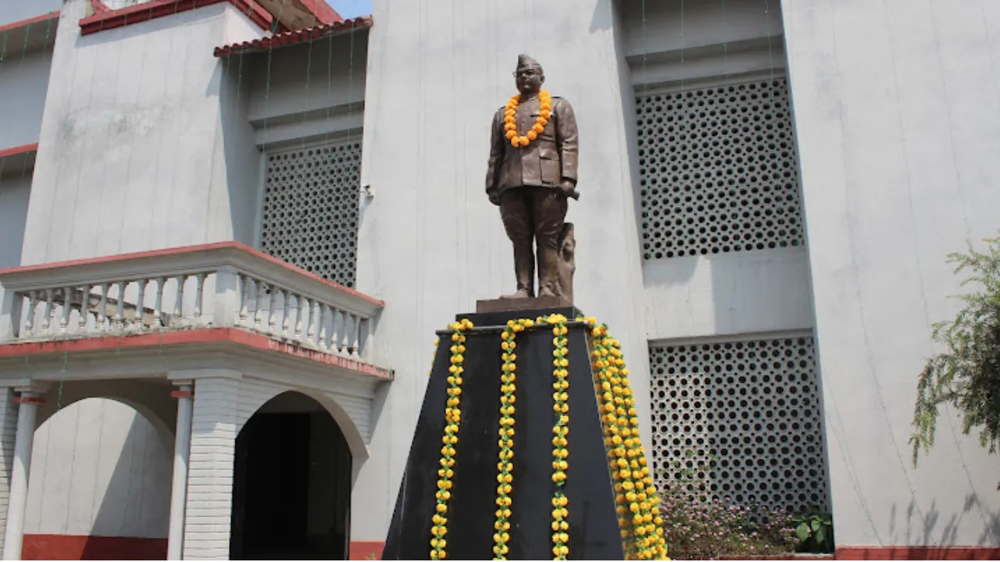

✈️ By Air
- Bir Tikendrajit Airport (Imphal): Well connected with Delhi, Kolkata, Guwahati, and Bangalore.
- Helicopter Service: Available to remote areas like Jiribam and Moreh.
Described by Lord Irwin as the "Switzerland of India," Manipur is a land of undulating hills surrounding a football-shaped valley. It is the soul of the Meitei culture and home to colorful hill tribes like the Nagas and Kukis. Its history dates back to 33 AD under the deity king Pakhangba.
Manipur is the birthplace of the graceful Ras Leela dance, one of India's classical dance forms. The state represents a unique blend of ancient Sanamahism (worship of nature deities) and Vaishnavism. It is a land where martial arts (Thang-Ta) and artistic delicacy coexist in perfect harmony.

The Floating Wonder

The Historic Capital

The Misty Hills

The Freedom Hub
Route: Imphal City
Land in Imphal. Visit the Kangla Fort and the Govindajee Temple for evening aarti. Stay in Imphal.
Route: Imphal Local
Morning at Ima Keithel. Visit the Imphal War Cemetery (WWII) and State Museum. Stay in Imphal.
Route: Imphal ➔ Moirang ➔ Loktak
Drive to Moirang. Visit INA Museum. Take a boat to Sendra Island. Stay in a Floating Homestay.
Route: Keibul Lamjao
Early morning visit to Keibul Lamjao National Park. Spot the Sangai Deer. Return to Imphal.
Buy Black Rice and local handloom items before your flight.
Route: Imphal
Arrival in Imphal. Acclimatize and enjoy a traditional Manipuri Thali. Stay in Imphal.
Route: Imphal ➔ Ukhrul
A scenic 3-hour drive to Ukhrul. Watch the landscape change to pine forests. Stay in Ukhrul.
Route: Shirui Peak
Trek to Shirui Kashong Peak to see the Shirui Lily. Enjoy panoramic views. Stay in Ukhrul.
Route: Khangkhui Caves
Visit ancient limestone Khangkhui Mangsor Caves. Explore Nungbi village (black pottery).
Route: Ukhrul ➔ Andro ➔ Imphal
Drive back. Stop at Andro Cultural Village to see the ancient burning fire. Stay in Imphal.
| Time of Year | Best For |
|---|---|
| November | Sangai Festival: The biggest cultural festival of the state (Nov 21-30). |
| October to March | Pleasant weather, clear skies, and great for general sightseeing. |
| May to June | Best for seeing the blooming Shirui Lily in Ukhrul. |
All non-native visitors (Indian citizens) must obtain a permit online or upon arrival at Imphal airport/entry check-posts.
The sun rises as early as 4:30 AM and sets by 4:30 PM in winter. Plan your days early. Markets close by 6:00 PM.
Always carry your original ID (Aadhaar/Voter ID) and permit. Cooperate politely at Assam Rifles or Police check-posts.
Modest dress is required at temples. For food, if vegetarian, specify "Veg-without-fish" or visit Vaishnavite Hindu eateries, as local cuisine heavily uses fermented fish.